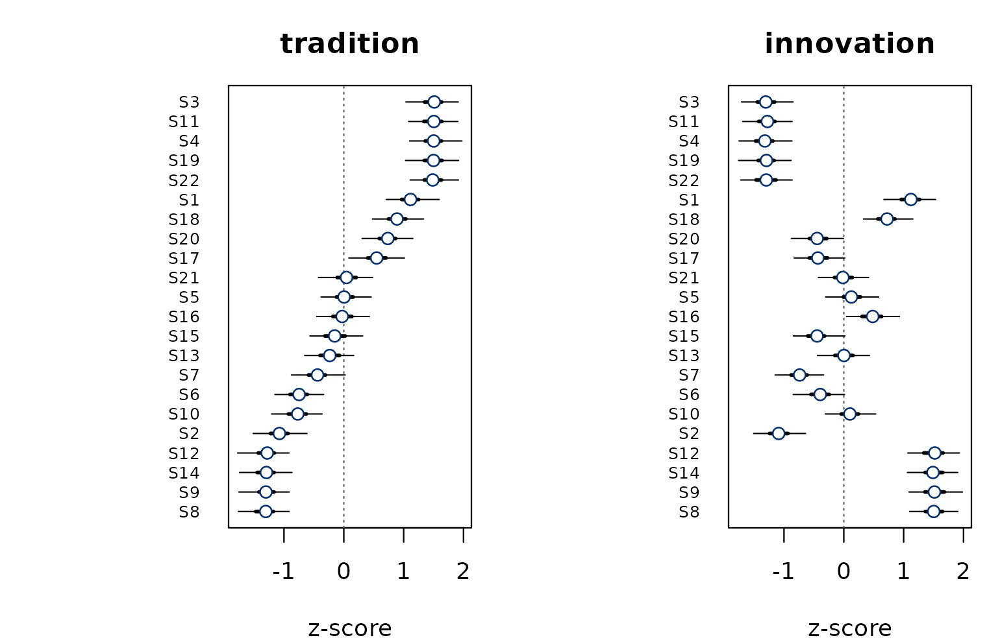

Getting started with bayesqm
Raymond Dacosta Azadda
April 2026
Source:vignettes/bayesqm-intro.Rmd
bayesqm-intro.RmdThis vignette walks through one Q study end to end in
bayesqm: import, fit, diagnose, interpret, select K,
and export. The structure mirrors the classical qmethod
workflow so readers can map every step onto its Bayesian analogue.
On your own machine, you would fit a real model with
fit_bayesian() via a Stan backend. For this document we
work from a synthetic fit produced by demo_fit() so every
plot and summary below renders without requiring Stan.
The Q-sort data
A Q study asks each participant to rank-order a set of statements
into a forced distribution. bayesqm represents that as a
J × N numeric matrix (statements as rows, participants as
columns) plus a vector of forced-distribution counts. For a real study,
read_qsort() auto-detects the file format:
qdata <- read_qsort("mystudy.csv") # CSV / Excel / HTMLQ / FlashQ
qdata <- read_qsort("mystudy.DAT") # PQMethod
qdata <- read_qsort("mystudy.zip") # KADE projectqmethod users can use the dotted aliases instead:
import.pqmethod(), import.htmlq(),
import.kenq(), import.easyhtmlq().
For this vignette we simulate a dataset with
generate_data() and wrap it with
qsort_data():
set.seed(1)
sim <- generate_data(N = 20, J = 22, K = 2, seed = 1)
qdata <- qsort_data(sim$Y, distribution = sim$distribution,
source = "simulated")
qdata
#> Q-sort data
#> statements : 22 participants : 20
#> distribution: 1 2 3 10 3 2 1 (sum = 22 )
#> value range : [-3, 3]
#> source : simulatedFitting the model
On real data you would call fit_bayesian():
fit <- fit_bayesian(qdata, K = 2, chains = 4, iter = 2000,
warmup = 1000, seed = 1)The function samples the posterior of a low-rank factor model with a Student-t likelihood (by default) and a hierarchical normal prior on the loadings, then resolves rotational ambiguity with MatchAlign. For this vignette, we use the synthetic fit helper:
fit <- demo_fit(N = 20, J = 22, K = 2, seed = 1)
fit
#> Bayesian Q-methodology factor model
#> Call: fit_bayesian(Y, K = K)
#> Family: Student-t (nu = estimated)
#> Factors: K = 2
#> Data: N = 20 persons, J = 22 statements
#> Draws: 4 chains x 1000 post-warmup = 4000 total
#> Backend: demo
#> Fitted: 2026-04-24 21:50:45
#> Max Rhat: 1.010
#> Min ESS: bulk 820 / tail 950
#> Divergent: 0
#>
#> Factor loadings (posterior median [95% CI], first 10 of 20 persons):
#> f1 f2
#> P1 0.72 [0.57, 0.87] -0.04 [-0.22, 0.12]
#> P2 0.12 [-0.04, 0.29] 0.82 [0.67, 0.98]
#> P3 0.73 [0.57, 0.91] 0.04 [-0.11, 0.21]
#> P4 -0.13 [-0.30, 0.01] 0.61 [0.44, 0.77]
#> P5 0.78 [0.62, 0.95] -0.04 [-0.21, 0.11]
#> P6 0.00 [-0.16, 0.16] 0.85 [0.70, 1.00]
#> P7 0.82 [0.69, 0.98] 0.08 [-0.07, 0.24]
#> P8 -0.09 [-0.25, 0.07] 0.58 [0.43, 0.77]
#> P9 0.56 [0.40, 0.72] -0.04 [-0.21, 0.09]
#> P10 -0.03 [-0.21, 0.11] 0.65 [0.50, 0.82]
#> ... (10 more; see fit$loa_median / fit$ci_lower / fit$ci_upper)
#>
#> Hyperparameters:
#> parameter mean median sd lower upper
#> nu 19.7 19.68 3.709 12.24 26.49
#> sigma 0.5 0.51 0.078 0.36 0.65
#> tau 0.5 0.50 0.080 0.35 0.66
#>
#> Use summary() for factor characteristics, distinguishing/consensus tables, and LOO.summary(fit) adds factor characteristics, the PSIS-LOO
ELPD (when available), distinguishing-statement counts, and the
MatchAlign diagnostic.
Diagnostics
Convergence statistics live in fit$diagnostics:
fit$diagnostics
#> $rhat_max
#> [1] 1.01
#>
#> $ess_bulk
#> [1] 820
#>
#> $ess_tail
#> [1] 950
#>
#> $divergences
#> [1] 0plot_tucker() visualises the per-draw Tucker’s phi
between each aligned factor column and the MatchAlign pivot. Values near
1 indicate a stable alignment; bimodality signals residual
label-switching.
plot_tucker(fit)
MatchAlign alignment quality by factor.
Factor loadings
Each participant has a posterior distribution over their loading on
every factor. plot_loading_posterior() draws the loading
forest, with nested 50 percent and 95 percent credible-interval whiskers
and the classical Brown cut-off as a faint reference. Filled points are
participants with P(factor k dominant) > 0.5.

Loadings with nested 50% and 95% credible intervals.
The same information as a tidy data frame:
head(compute_loadings(fit$Lambda_draws, prob = 0.95))
#> participant f1_loa f1_lower f1_upper f2_loa f2_lower
#> 1 P1 0.724465890 0.5694408 0.87365976 -0.04467776 -0.2181482
#> 2 P2 0.121618928 -0.0448359 0.28842984 0.82020002 0.6659145
#> 3 P3 0.735303416 0.5696475 0.90862653 0.04951714 -0.1133779
#> 4 P4 -0.131067733 -0.2999218 0.01401073 0.61150829 0.4357542
#> 5 P5 0.783273983 0.6190436 0.94517785 -0.04072197 -0.2082932
#> 6 P6 -0.001107792 -0.1624583 0.16479837 0.84841154 0.6952639
#> f2_upper
#> 1 0.1218140
#> 2 0.9811106
#> 3 0.2096828
#> 4 0.7695044
#> 5 0.1125100
#> 6 1.0021064Factor z-scores
plot() gives a cross-panel z-score dotchart; rows share
an order (by factor 1’s posterior mean, configurable via
sort_by) so the reader can scan horizontally to compare
factors.
plot(fit)
Posterior z-scores across factors with 50 / 95 CrIs.
For a single statement across factors,
plot_zscore_posterior() gives the drill-down:
plot_zscore_posterior(fit, statement = 1)
Posterior z-score for a single statement across factors.
Choosing K
run_bayes() fits the model for each K in a range and
applies the peak-plus-Sivula protocol: the ELPD peak is
the automated choice; the Sivula (2025) parsimony rule is reported
alongside.
On real data you would call:
run <- run_bayes(qdata, K_max = 4, seed = 1,
chains = 2, iter = 1500, warmup = 800)For this vignette we use a synthetic run produced by
demo_run():
run <- demo_run(K_max = 5, k_peak = 3, k_sivula = 2, case = "gap")
run
#> Bayesian Q-methodology: multi-K comparison
#> K range: 1..5
#> ELPD peak: K = 3 (automated adoption)
#> Sivula rule: K = 2 (parsimony diagnostic)
#> Case: gap (ELPD peak > Sivula (weak discrimination between adjacent models))
#>
#> LOO comparison:
#> K elpd se delta_elpd se_delta ratio
#> 1 -180.09 8.00
#> 2 -170.91 7.25 -9.18 3.00 3.06
#> 3 -165.42 6.50 -5.49 3.00 1.83
#> 4 -170.20 5.75 4.78 3.00 1.59
#> 5 -179.61 5.00 9.41 3.00 3.14
#>
#> Case 'gap': adopt k_peak if corroborated by external evidence, else fall back to k_sivula for parsimony.
make_elpd_diff(run, adopted = 3)
ΔELPD vs K = 1 with the Sivula rejection band (|ΔELPD| < 4). Red triangle marks the Sivula K, blue square the ELPD peak, orange diamond the K adopted by the analyst.
The run$case field labels this relationship. When both
methods pick the same K, the case is agree and the data
supports that K unambiguously. When the ELPD peak exceeds the Sivula
choice, the case is gap: the richer model fits a bit better
on LOO but not decisively, and the choice between them should turn on
substantive evidence. When Sivula picks a larger K than the peak
(reversed), something has usually gone wrong in the ELPD
comparison itself; this case is rare in practice and should not be read
as a substantive finding.
Distinguishing, consensus, and membership
bayesqm replaces the classical z-score test with a
direct posterior probability. For every statement and every factor pair,
P(|f_jk − f_jl| > δ) answers how confidently do the
factors separate this statement? The default δ = 1 is
on the standardised factor-score scale.
plot_dist_cons(fit, delta = 1.0)
Distinguishing-statement probability. Rows sorted so the most discriminating statements are at the top.
Participant-level membership is probabilistic too.
classify_membership() turns posterior dominance into a
Strong / Moderate / Weak tier:
head(classify_membership(fit$Lambda_draws))
#> participant dominant_factor dominant_label max_prob tier
#> 1 P1 1 f1 1 Strong
#> 2 P2 2 f2 1 Strong
#> 3 P3 1 f1 1 Strong
#> 4 P4 2 f2 1 Strong
#> 5 P5 1 f1 1 Strong
#> 6 P6 2 f2 1 Strong
make_dominant_panel(fit)
Blue tiles = posterior probability that each factor is dominant for a given participant (values printed in each cell). The right column shows the overall assignment verdict on an orange-red scale.
Posterior predictive check
plot_ppc() shows the posterior distribution of the RMSE
between cor(Y_rep) and cor(Y_obs). A
well-specified model puts most mass at small RMSE.
plot_ppc(fit)
PPC on the correlation matrix.

Reporting and exporting
save_bayesqm_plot() writes any plot to PDF / SVG / PNG /
TIFF / JPEG at journal-appropriate dimensions:
save_bayesqm_plot("fig_loadings.pdf", plot_loading_posterior(fit))
save_bayesqm_plot("fig_elpd.pdf", plot_elpd(run),
width = 3.5, height = 3)caption_bayesqm() returns a ready-to-paste figure
caption with model configuration, sample sizes, interval probability,
and convergence diagnostics:
caption_bayesqm(fit)
#> [1] "Bayesian Q-methodology factor model (K = 2, N = 20, J = 22); fitted with a Student-t likelihood via demo (4 chains, 4,000 post-warmup draws); intervals shown at 95% posterior coverage; max Rhat = 1.010, min bulk ESS = 820, 0 divergent transitions. Fitted with the bayesqm R package (Dacosta Azadda, 2026)."Standard R accessors work on the fit (coef,
fitted, residuals, sigma,
family, as.matrix), and
as.matrix(fit) returns a Stan-style draws matrix that
posterior and bayesplot consume natively.
Renaming factors and theming
Substantive factor labels replace f1..fK in every
slot:
fit2 <- rename_factors(fit, c("tradition", "innovation"))
plot(fit2)
Every plot reads its palette through bayesqm_colors();
switch the scheme once and every subsequent plot follows:
bayesqm_set_colors("teal") # "blue" (default), "red", "purple", "grey"
plot(fit)
bayesqm_set_colors("blue")Where next
-
?fit_bayesian— every prior and sampler option -
?run_bayes— peak-plus-Sivula thresholds -
?bayesqm-membership— the full set of membership summaries -
ggplot2::autoplot()— ggplot2 / ggdist versions of every view above, whenggplot2andggdistare installed